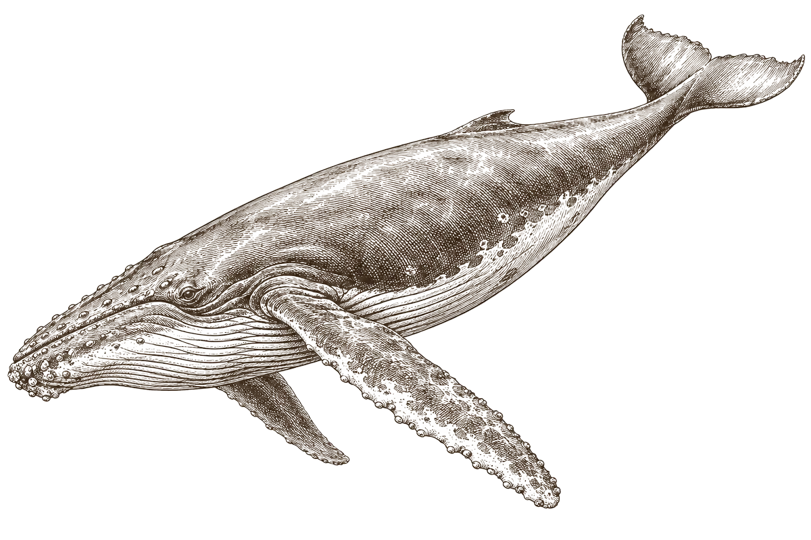
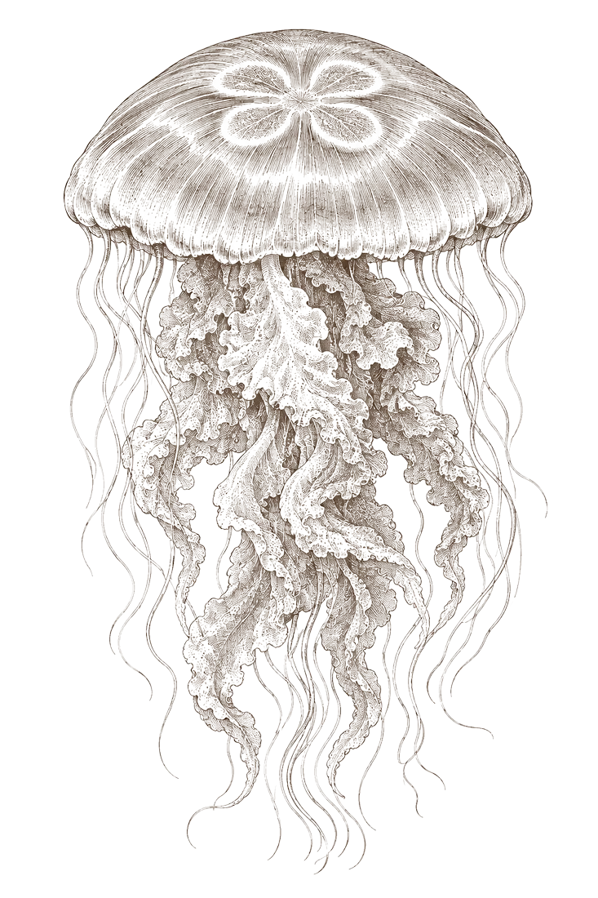
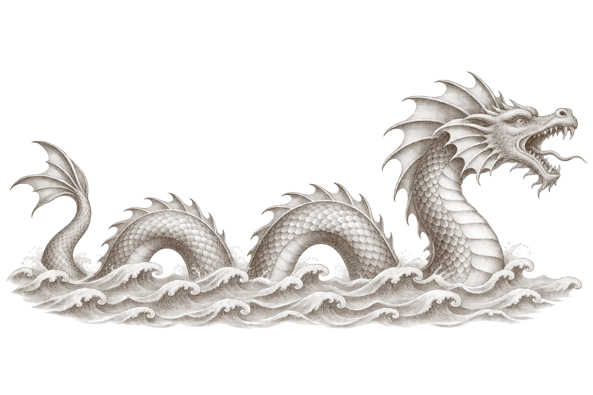
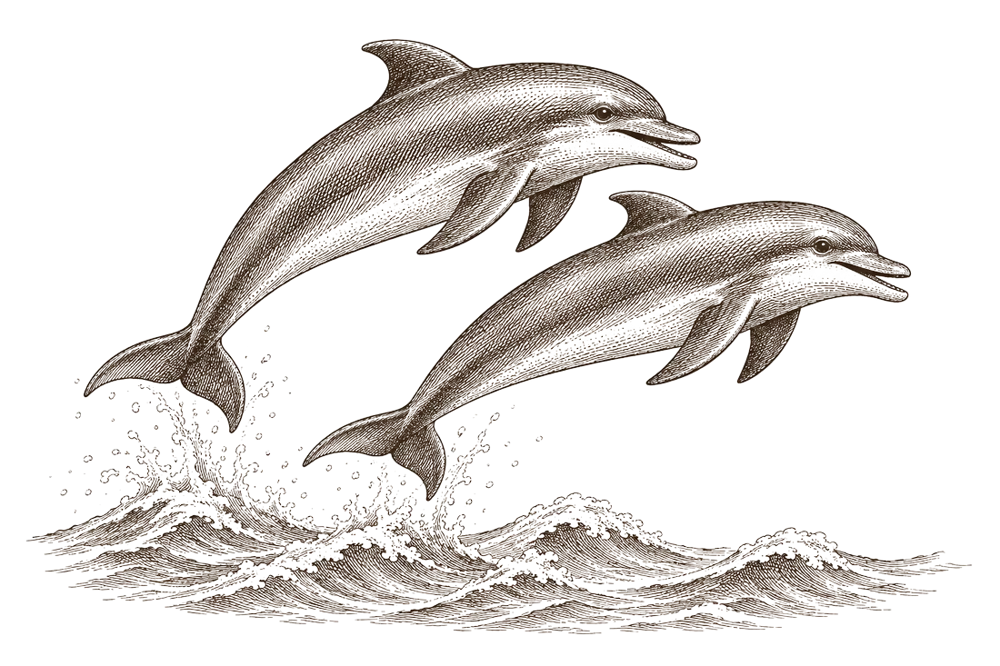

AI Engineer
Open to offers · 1+ year shipping production LLM systems · Bengaluru or remote

BalaenaI. AI Systems6 projects · 3 in production
MedusaII. ML & Research6 projects · 1 paper
Serpens · here be dragonsIII. Creative11 games & toys
DelphinusIV. LogbookWhere I've workedWhere I've worked, and what I've published.
Now
1+ year building LLM agents, retrieval and NL2SQL systems that run in production. Three projects in AI Systems are replicas of this work on made-up data: NL2SQL, PlannerAI and Lookbook Search. See them
Jul – Aug 2024
Designed and graded Spark assignments for 200+ students. Reviewed distributed-systems projects: Kafka task queues, multi-client file transfer and real-time log management.
Spark · Kafka · Hadoop
Jun – Jul 2024
Built real-time drill-down charts, and an async API that cut data retrieval from 40 s to 2 s (95% faster).
.NET Core · SQL · Angular · RxJS
Jun – Aug 2023
Led the database migration from a team-based to an organisation- and project-based schema, and rebuilt the company website frontend.
PostgreSQL · Supabase · Next.js
Jun – Jul 2023
Computer vision for cricket ball tracking and wide-ball detection with 90% accuracy, visualised in Unity3D at 60 fps. See the live demo
OpenCV · MediaPipe · TensorFlow · Unity3D
2025
Paper. International Conference on Electronics Information and Emergency Communication.
Provisions Python · JavaScript · SQL · C#/.NET · PyTorch · TensorFlow · NumPy · OpenCV · MediaPipe · Claude API · vLLM · LoRA · MCP · Chroma · Neo4j · FastAPI · Spark · Kafka · PostgreSQL · SQLite · Next.js · Angular · d3.js · Canvas